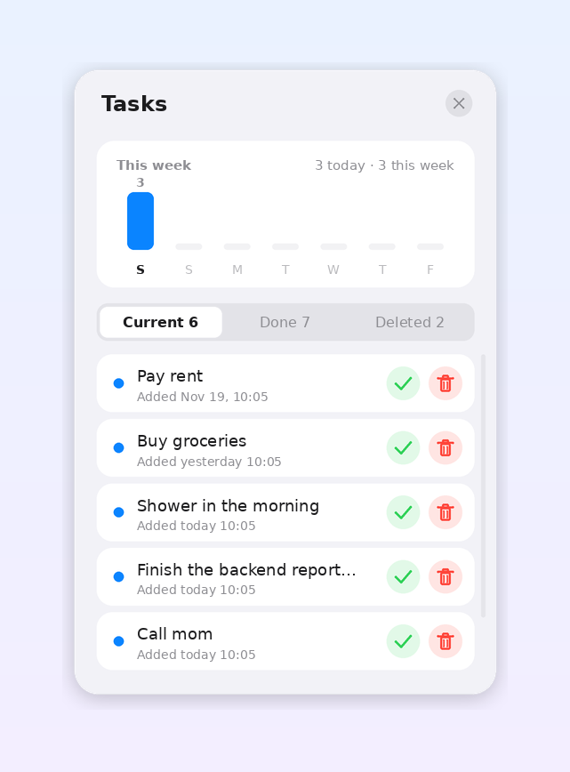
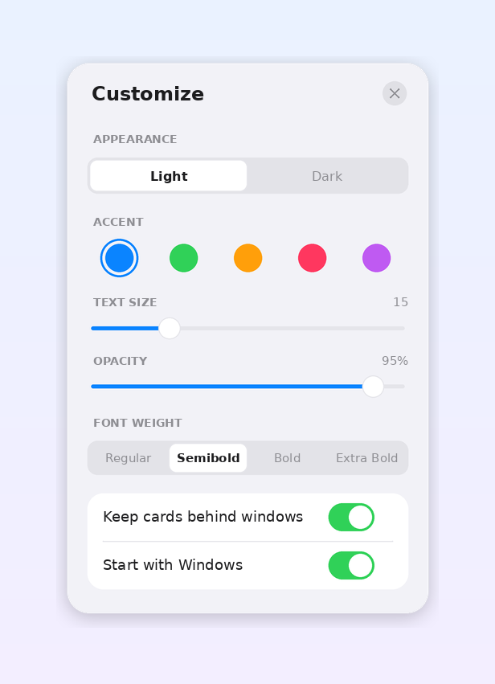
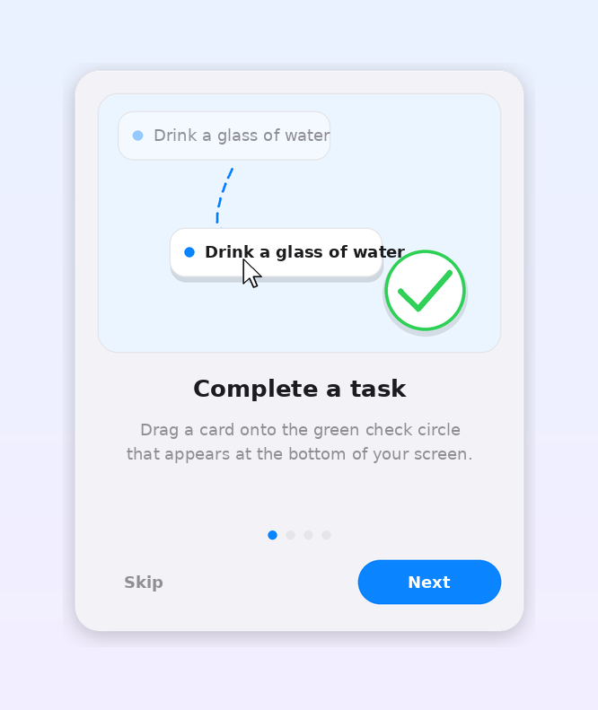

A desktop task manager that stays out of your way
Cards on your wallpaper
Every task is its own rounded card, always visible behind your windows. Drag them wherever you like.
Drag to complete
Drop a card on the animated green check to finish it. Right-click to delete, with a confirmation and an easy restore.
Weekly progress
A clean chart shows what you finished each day, from Saturday to Friday.
Add tasks instantly
Press Ctrl+Alt+N from anywhere. DeskTask lives quietly in the system tray.
Beautiful and customizable
Light and dark themes, five accent colors, four font weights, adjustable size and opacity.
Private by design
No account, no cloud, no telemetry. Your tasks stay in a small file on your PC.
Screenshots



Frequently asked questions
Is DeskTask free?
Yes. It is free and open source under the MIT license.
Does it need internet or an account?
No. It works fully offline and stores your tasks locally on your PC.
Which Windows versions are supported?
Windows 10 and Windows 11.
Can it start with Windows?
Yes. Turn on "Start with Windows" in the tray menu.